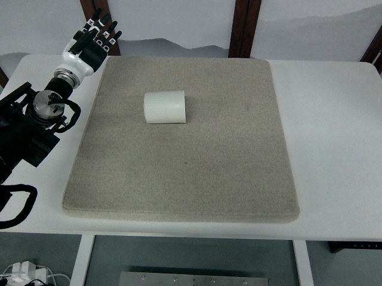

RoboMIND · tienkung_gello_1rgb__upright_white_cup/1211_141244
Upright white cup

Annotation
From the dedicated visual review of this video (humanoid_action_v1). Plain text · JSON
Observed outcome
- Status
visually_completed
- Description
The white cup, initially lying on its side near the upper-left of the mat, is grasped by the hand (closing from about frame 190-215), lifted and rotated (rocking from about frame 244, clearly lifted from about frame 264), carried to the top-left of the image, held at the back of the mat with the mouth up, and lowered to an upright stand on the mat by about frame 500. The hand opens from about frame 480 to 510, rises clear above the cup, leaves the view at the top-left (about frames 560-640) and returns to a raised open-handed pose at the left edge by about frame 660, held to the last frame (730). The cup ends upright (mouth up, logo on the near wall) at roughly the upper-left of the mat, slightly left of and above where it started; no other object moves.
Hand roles
- Active visible arm
The single visible arm reaches over the lying cup, places its thumb on the near/left outer wall and its fingers over the top/far side, closes on the cup wall, lifts and rotates the cup so its mouth turns up, carries it to the back-left, lowers it to an upright stand on the mat, opens, rises clear and withdraws.
- Other arm
Not visible in the overhead view; telemetry for the second 8-column block is constant, so it does not act.
Coordination
Single-arm action; no hand-to-hand transfer, second-hand support or human interaction. The cup is held by a dexterous pinch/wrap of thumb and fingers on the wall (not a parallel-jaw grip); the cup is reoriented as a whole by wrist and forearm rotation, with no sliding along the mat visible before lift and no visible regrasp or slip while held.
Robot-side evidence
- Visible description
Only one arm is visible: a white-and-black humanoid forearm and five-finger dexterous hand entering the overhead image from the left edge, rooted in a dark robot body/shoulder mass at the left and lower-left; the mat and the cup lie to the right. The thumb is the black digit on the image-bottom side of the hand when it reaches over the cup.
- Source annotation
original/task_prompt.txt: 'Upright white cup'; no side stated.
- Telemetry evidence
puppet/joint_position has 16 columns. Columns 0-7 vary (column 4 ranges about -0.4 to 1.25, column 6 about -0.61 to 0.13, column 7 is the hand/gripper-like value falling from 1.0 to about 0.73-0.77 on grasp and returning to 1.0 on release); columns 8-15 are essentially constant (std <= 0.002). The moving block therefore corresponds to the visible arm. Which block is left vs right is not documented in the source.
- Inferred side
Probably the robot's left arm: the robot appears to face image-right from the left edge, so image-up/far side is its left, the visible arm is on that side, the thumb points toward image-bottom (medial side for a palm-down left hand), and the first telemetry block conventionally maps to the left arm. This is inference, not established, so the usable prompt says 'arm entering from the left edge of the image' instead of naming a robot side.
- Visual certainty
Robot-relative left/right not reliably determined from the overhead view (head, torso and facing direction not visible).
Chronology
| Frames | Observation |
|---|---|
| 0–36 | Robot arm held still at the left edge of the overhead image with the hand raised and fingers open pointing up. A white cylindrical cup lies on its side (axis horizontal) near the upper-left of the blue-grey foam mat; table otherwise empty. Telemetry flat until about frame 40. |
| 37–90 | Arm swings the raised hand out over the mat toward the cup: hand rotates from pointing up to pointing right with fingers extended and thumb (black digit on the image-bottom side) separate; wrist and forearm rotate while the arm reaches along the mat. |
| 91–150 | Hand descends beside the cup: the thumb tip touches the top-left side wall of the lying cup (about frames 92-110), the fingers stay extended above and behind the cup, and the hand shifts slowly to the right until it straddles the cup with the thumb on the near/left outer wall and the fingers over the top (frames 130-150). Cup has not moved. |
| 151–188 | Hand settles around the cup wall and fingers begin to curl; hand-closing value (puppet/joint_position column 7) is still about 0.96-0.98. No cup motion. |
| 189–262 | Hand closes on the cup (column 7 falls from about 0.96 to 0.77 between about frames 190 and 215). Cup stays on the mat through frame ~240; from about frame 244 it rocks and its near edge lifts, and by frames 250-262 the cup is visibly rotating with the hand (rim edge rising) while still touching the mat. |
| 263–310 | Cup is lifted off the mat and rotated: it tilts from lying on its side through about 45 degrees (frame 270-288) toward mouth-up-and-right while the forearm rises and the hand moves toward the upper-left; rim and interior become visible (frames 288-310). Cup moves rigidly with the hand; thumb stays on the outer wall near the front and fingers wrap the far/top side. |
| 311–360 | Cup is carried up to the top-left of the image near the back edge of the mat, held well off the table, mouth facing up and toward the right, with the black printed logo on the near wall (frames 312-360). No regrasp or slip visible. |
| 361–440 | Cup is held at the top-left with the mouth tilted toward the camera, then gradually levelled toward mouth-up as the wrist rotates (frames 360-440); arm moves slowly down and toward the mat. Hand grip pattern unchanged (thumb on near wall, fingers on far side). |
| 441–503 | Cup is lowered and levelled to an upright pose on the mat near the upper-left of the mat while still held; hand-closing value stays about 0.73 until about frame 480 and then rises, i.e. the hand begins to open from about frame 480. Cup is upright with its mouth facing up by about frame 500. |
| 504–527 | Hand opens (column 7 reaches about 1.0 by frame 510); fingers lift off the cup's rim and wall and are open above the cup. Cup stands upright on the mat, untouched by the fingers from about frame 510. |
| 528–580 | Open hand rises above and slightly behind the cup (thumb tip briefly over the cup mouth around frames 530-550) and then moves up and out of the frame top-left (frames 550-580); cup remains upright and stationary. |
| 581–640 | Hand is largely out of view above the top-left edge of the image while the forearm comes back down; cup upright and stationary at the upper-left of the mat. |
| 641–730 | Arm withdraws to the left edge and rises to a raised pose with the open hand pointing up (frames 660-730), similar to the starting pose; cup stands upright and stationary for the rest of the clip. Telemetry settles near its starting values. |
Clip selection
The episode is one continuous single task (reach, grasp the cup lying on its side, lift and rotate it upright, set it down, release, withdraw); there are no independent subtasks, so the complete original clip is retained and no shortened branch or separate full-sequence prompt is written.
Differences from the publisher annotation
- None found: the visible action (a cup lying on its side is turned upright and left standing) matches the instruction 'Upright white cup'. The instruction does not mention grasping, lifting and carrying the cup, which the video shows before the cup is set down upright.
Uncertainties
- Robot-relative left/right arm is not established from the overhead view; probable left arm is inferred from geometry and telemetry-block convention and is not asserted in the prompt.
- Exactly which fingertips contact the cup and which wall segment is grasped (outer wall near the rim versus mid-wall) cannot be resolved at 640x480; the prompt says 'cup wall'.
- While the cup is lying on its side, the direction its open end faces at frame 0 is not visible; the rim appears facing up and right once the cup is lifted (frames 270-310).
- The frame at which the cup first touches the mat during lowering (about frames 440-500) and the exact frame of release are not separable from the held pose; telemetry (hand value rising from about frame 480 and reaching 1.0 by about frame 510) and the visibly open fingers by about frame 510 support release around frames 480-510.
- Whether the cup shifts slightly while the hand settles (frames 150-240) cannot be excluded at this resolution; it appears not to move until about frame 244.
- FPS is not recorded; frame indices are authoritative, not time.
Complete review record action_review.json
{
"prompt_protocol": "humanoid_action_v1",
"prompt_protocol_note": "humanoid_action_v1 is applied by analogy to a non-Humanoid-Everyday/GR1 humanoid (Tien Kung with dexterous hands, single overhead RGB stream); not an original dataset of that protocol.",
"prompt_provenance": "visually_authored_from_video_and_initial_frame",
"dataset": "x-humanoid-robomind/RoboMIND",
"task": "upright_white_cup",
"episode_id": "1211_141244",
"embodiment": "tienkung_gello_1rgb",
"source_video": "../../original/data/trajectory.hdf5",
"generation_camera": "camera_top",
"source_frame_count": 731,
"source_resolution": [
640,
480
],
"source_fps": null,
"source_fps_note": "FPS is not recorded in the source HDF5; 30 FPS is only a nominal playback rate, so no real-time durations are claimed.",
"selected_source_frame_start": 0,
"selected_source_frame_end_exclusive": 731,
"selected_frame_count": 731,
"selection_reason": "The episode is one continuous single task (reach, grasp the cup lying on its side, lift and rotate it upright, set it down, release, withdraw); there are no independent subtasks, so the complete original clip is retained and no shortened branch or separate full-sequence prompt is written.",
"usable_prompt": "The robot's arm entering from the left edge of the image reaches over the white cup lying on its side, closes its dexterous thumb and fingers around the cup wall, and lifts it off the mat. It tilts the cup mouth-up, carries it toward the back-left, and sets it down upright on the mat, then opens the hand. The hand rises clear of the cup and withdraws to a raised, open-fingered pose at the left edge, leaving the cup standing upright. Keep the camera fixed; preserve robot geometry, physically valid joint motion, and normal gripper opening and closing.",
"full_sequence_prompt": null,
"selected_action_outcome": {
"status": "visually_completed",
"description": "The white cup, initially lying on its side near the upper-left of the mat, is grasped by the hand (closing from about frame 190-215), lifted and rotated (rocking from about frame 244, clearly lifted from about frame 264), carried to the top-left of the image, held at the back of the mat with the mouth up, and lowered to an upright stand on the mat by about frame 500. The hand opens from about frame 480 to 510, rises clear above the cup, leaves the view at the top-left (about frames 560-640) and returns to a raised open-handed pose at the left edge by about frame 660, held to the last frame (730). The cup ends upright (mouth up, logo on the near wall) at roughly the upper-left of the mat, slightly left of and above where it started; no other object moves."
},
"source_overall_outcome": {
"status": "visually_completed",
"source_quality_label": null,
"description": "Same as the selected action: the cup is uprighted and left standing. The source language instruction is 'Upright white cup'. The exact moment of mat contact during lowering (about frames 440-500) is not separable from the hand-held pose at overhead resolution."
},
"anatomical_side_evidence": {
"visible_description": "Only one arm is visible: a white-and-black humanoid forearm and five-finger dexterous hand entering the overhead image from the left edge, rooted in a dark robot body/shoulder mass at the left and lower-left; the mat and the cup lie to the right. The thumb is the black digit on the image-bottom side of the hand when it reaches over the cup.",
"source_annotation": "original/task_prompt.txt: 'Upright white cup'; no side stated.",
"telemetry_evidence": "puppet/joint_position has 16 columns. Columns 0-7 vary (column 4 ranges about -0.4 to 1.25, column 6 about -0.61 to 0.13, column 7 is the hand/gripper-like value falling from 1.0 to about 0.73-0.77 on grasp and returning to 1.0 on release); columns 8-15 are essentially constant (std <= 0.002). The moving block therefore corresponds to the visible arm. Which block is left vs right is not documented in the source.",
"inferred_side": "Probably the robot's left arm: the robot appears to face image-right from the left edge, so image-up/far side is its left, the visible arm is on that side, the thumb points toward image-bottom (medial side for a palm-down left hand), and the first telemetry block conventionally maps to the left arm. This is inference, not established, so the usable prompt says 'arm entering from the left edge of the image' instead of naming a robot side.",
"visual_certainty": "Robot-relative left/right not reliably determined from the overhead view (head, torso and facing direction not visible)."
},
"arm_roles": {
"active_visible_arm": "The single visible arm reaches over the lying cup, places its thumb on the near/left outer wall and its fingers over the top/far side, closes on the cup wall, lifts and rotates the cup so its mouth turns up, carries it to the back-left, lowers it to an upright stand on the mat, opens, rises clear and withdraws.",
"other_arm": "Not visible in the overhead view; telemetry for the second 8-column block is constant, so it does not act."
},
"coordination": "Single-arm action; no hand-to-hand transfer, second-hand support or human interaction. The cup is held by a dexterous pinch/wrap of thumb and fingers on the wall (not a parallel-jaw grip); the cup is reoriented as a whole by wrist and forearm rotation, with no sliding along the mat visible before lift and no visible regrasp or slip while held.",
"chronology": [
{
"source_frames_inclusive": [
0,
36
],
"observation": "Robot arm held still at the left edge of the overhead image with the hand raised and fingers open pointing up. A white cylindrical cup lies on its side (axis horizontal) near the upper-left of the blue-grey foam mat; table otherwise empty. Telemetry flat until about frame 40."
},
{
"source_frames_inclusive": [
37,
90
],
"observation": "Arm swings the raised hand out over the mat toward the cup: hand rotates from pointing up to pointing right with fingers extended and thumb (black digit on the image-bottom side) separate; wrist and forearm rotate while the arm reaches along the mat."
},
{
"source_frames_inclusive": [
91,
150
],
"observation": "Hand descends beside the cup: the thumb tip touches the top-left side wall of the lying cup (about frames 92-110), the fingers stay extended above and behind the cup, and the hand shifts slowly to the right until it straddles the cup with the thumb on the near/left outer wall and the fingers over the top (frames 130-150). Cup has not moved."
},
{
"source_frames_inclusive": [
151,
188
],
"observation": "Hand settles around the cup wall and fingers begin to curl; hand-closing value (puppet/joint_position column 7) is still about 0.96-0.98. No cup motion."
},
{
"source_frames_inclusive": [
189,
262
],
"observation": "Hand closes on the cup (column 7 falls from about 0.96 to 0.77 between about frames 190 and 215). Cup stays on the mat through frame ~240; from about frame 244 it rocks and its near edge lifts, and by frames 250-262 the cup is visibly rotating with the hand (rim edge rising) while still touching the mat."
},
{
"source_frames_inclusive": [
263,
310
],
"observation": "Cup is lifted off the mat and rotated: it tilts from lying on its side through about 45 degrees (frame 270-288) toward mouth-up-and-right while the forearm rises and the hand moves toward the upper-left; rim and interior become visible (frames 288-310). Cup moves rigidly with the hand; thumb stays on the outer wall near the front and fingers wrap the far/top side."
},
{
"source_frames_inclusive": [
311,
360
],
"observation": "Cup is carried up to the top-left of the image near the back edge of the mat, held well off the table, mouth facing up and toward the right, with the black printed logo on the near wall (frames 312-360). No regrasp or slip visible."
},
{
"source_frames_inclusive": [
361,
440
],
"observation": "Cup is held at the top-left with the mouth tilted toward the camera, then gradually levelled toward mouth-up as the wrist rotates (frames 360-440); arm moves slowly down and toward the mat. Hand grip pattern unchanged (thumb on near wall, fingers on far side)."
},
{
"source_frames_inclusive": [
441,
503
],
"observation": "Cup is lowered and levelled to an upright pose on the mat near the upper-left of the mat while still held; hand-closing value stays about 0.73 until about frame 480 and then rises, i.e. the hand begins to open from about frame 480. Cup is upright with its mouth facing up by about frame 500."
},
{
"source_frames_inclusive": [
504,
527
],
"observation": "Hand opens (column 7 reaches about 1.0 by frame 510); fingers lift off the cup's rim and wall and are open above the cup. Cup stands upright on the mat, untouched by the fingers from about frame 510."
},
{
"source_frames_inclusive": [
528,
580
],
"observation": "Open hand rises above and slightly behind the cup (thumb tip briefly over the cup mouth around frames 530-550) and then moves up and out of the frame top-left (frames 550-580); cup remains upright and stationary."
},
{
"source_frames_inclusive": [
581,
640
],
"observation": "Hand is largely out of view above the top-left edge of the image while the forearm comes back down; cup upright and stationary at the upper-left of the mat."
},
{
"source_frames_inclusive": [
641,
730
],
"observation": "Arm withdraws to the left edge and rises to a raised pose with the open hand pointing up (frames 660-730), similar to the starting pose; cup stands upright and stationary for the rest of the clip. Telemetry settles near its starting values."
}
],
"uncertainties": [
"Robot-relative left/right arm is not established from the overhead view; probable left arm is inferred from geometry and telemetry-block convention and is not asserted in the prompt.",
"Exactly which fingertips contact the cup and which wall segment is grasped (outer wall near the rim versus mid-wall) cannot be resolved at 640x480; the prompt says 'cup wall'.",
"While the cup is lying on its side, the direction its open end faces at frame 0 is not visible; the rim appears facing up and right once the cup is lifted (frames 270-310).",
"The frame at which the cup first touches the mat during lowering (about frames 440-500) and the exact frame of release are not separable from the held pose; telemetry (hand value rising from about frame 480 and reaching 1.0 by about frame 510) and the visibly open fingers by about frame 510 support release around frames 480-510.",
"Whether the cup shifts slightly while the hand settles (frames 150-240) cannot be excluded at this resolution; it appears not to move until about frame 244.",
"FPS is not recorded; frame indices are authoritative, not time."
],
"source_annotation_discrepancies": [
"None found: the visible action (a cup lying on its side is turned upright and left standing) matches the instruction 'Upright white cup'. The instruction does not mention grasping, lifting and carrying the cup, which the video shows before the cup is set down upright."
],
"inspection_coverage": {
"entire_sequence_reviewed": true,
"sampled_decoded_frame_indices": [
0,
2,
4,
6,
8,
10,
12,
14,
16,
18,
20,
22,
24,
26,
28,
30,
32,
34,
36,
38,
40,
42,
44,
46,
48,
50,
52,
54,
56,
58,
60,
62,
64,
66,
68,
70,
72,
74,
76,
78,
80,
82,
84,
86,
88,
90,
92,
94,
96,
98,
100,
102,
104,
106,
108,
110,
112,
114,
116,
118,
120,
122,
124,
126,
128,
130,
132,
134,
136,
138,
140,
142,
144,
146,
148,
150,
152,
154,
156,
158,
160,
162,
164,
166,
168,
170,
172,
174,
176,
178,
180,
182,
184,
186,
188,
190,
192,
194,
196,
198,
200,
202,
204,
206,
208,
210,
212,
214,
216,
218,
220,
222,
224,
226,
228,
230,
232,
234,
236,
238,
240,
242,
244,
246,
248,
250,
252,
254,
256,
258,
260,
262,
264,
266,
268,
270,
272,
274,
276,
278,
280,
282,
284,
286,
288,
290,
292,
294,
296,
298,
300,
302,
304,
306,
308,
310,
312,
314,
316,
318,
320,
322,
324,
326,
328,
330,
332,
334,
336,
338,
340,
342,
344,
346,
348,
350,
352,
354,
356,
358,
360,
362,
364,
366,
368,
370,
372,
374,
376,
378,
380,
382,
384,
386,
388,
390,
392,
394,
396,
398,
400,
402,
404,
406,
408,
410,
412,
414,
416,
418,
420,
422,
424,
426,
428,
430,
432,
434,
436,
438,
440,
442,
444,
446,
448,
450,
452,
454,
456,
458,
460,
462,
464,
466,
468,
470,
472,
474,
476,
478,
480,
482,
484,
486,
488,
490,
492,
494,
496,
498,
500,
502,
504,
506,
508,
510,
512,
514,
516,
518,
520,
522,
524,
526,
528,
530,
532,
534,
536,
538,
540,
542,
544,
546,
548,
550,
552,
554,
556,
558,
560,
562,
564,
566,
568,
570,
572,
574,
576,
578,
580,
582,
584,
586,
588,
590,
592,
594,
596,
598,
600,
602,
604,
606,
608,
610,
612,
614,
616,
618,
620,
622,
624,
626,
628,
630,
632,
634,
636,
638,
640,
642,
644,
646,
648,
650,
652,
654,
656,
658,
660,
662,
664,
666,
668,
670,
672,
674,
676,
678,
680,
682,
684,
686,
688,
690,
692,
694,
696,
698,
700,
702,
704,
706,
708,
710,
712,
714,
716,
718,
720,
722,
724,
726,
728,
730
],
"sampling_method": "Every second decoded frame of camera_top (frames 0-730, 366 frames) in sequential temporary 4x3 contact sheets covering the complete 731-frame source, plus native-resolution stored-JPEG frames at transitions decoded from the HDF5.",
"native_resolution_frame_indices": [
0,
92,
110,
130,
160,
200,
240,
250,
262,
270,
288,
312,
340,
420,
500,
510,
540,
600,
730
],
"conditioning_png_inspected_after_sequence": true,
"conditioning_png": "../first_frame.png",
"temporary_evidence_location": "/tmp/rv_review/robomind_1211_141244 (not a dataset artifact; removed)",
"ancillary_camera_videos_used": false,
"telemetry_used": "puppet/joint_position column standard deviations and values sampled every 30 frames, used as supporting evidence for which arm moves and for grasp and release timing."
},
"evidence_frame_indices": [
0,
92,
110,
130,
160,
200,
240,
250,
262,
270,
288,
312,
340,
420,
500,
510,
540,
600,
730
],
"review_completed_at": "2026-10-15T20:06:58Z",
"dedicated_review_agent": "review_robomind_1211_141244",
"channel_order_note": "Channel-order correction (2026-10-15): RoboMIND stores Tien Kung JPEGs with red and blue swapped relative to a standard decoder; this review was made on uncorrected frames, so colour terms in its observations are swapped (teal/cyan reads as yellow or yellow-green, blue as orange/brown, brown/pink as blue). Actions, timing and outcomes are unaffected. All decoded derivatives are now corrected.",
"generation_reference_validation": {
"source_frame_start": 0,
"source_frame_end_exclusive": 731,
"frame_count": 731,
"lossless_source_frame_correspondence_passed": true,
"original_source_hdf5_retained_unchanged": true
}
}